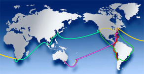
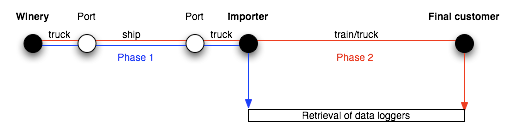

Supply Chain Management
(SCM) and Logistics
|
This research line is
focused on the development models
and methodologies
for supply chain
design, composition and optimization. This line includes topics on
performance comparison on different industries, collaboration within
supply chains, reverse logistics and lean supply chains, among others.
|
International wine supply chains
improvement
|
CEAL is part of the WSCC
(Wine Supply Chain Council). The WSCC is an international research
organization integrated by the Supply Chain &
Logistics Institute (GeorgiaTech,
USA), the CSIR (Coucil for Scientific and Industrial Research,
Sudáfrica), the CSIRO (CommonWealth Scientific and
Industrial
Research Organisation, Australia), the Universidad
Católica
de Chile (Chile), and the Universidad Nacional de Cuyo
(Argentina),
represented by CEAL (more information about the WSCC here).
|
There exist many
opportunities to make Wine Supply Chains (WSC) lean. The
WSCC aims at studying and capitalizing these opportunities, focusing on
the following aspects:
- Elimination of waste
- Management of variability
- Synchronization and alignment
- Continuous improvement
|
|  |
| Some of the routes under
study |
|
|
|
In this context, the
"Temperature tracking on international wine shipments" project is
currently being carried out.
|

Wine
temperature tracking project schema and phases
|
|
In
this project, data loggers are being instrumented for meassuring
temperatures all along wine shipments, in order to determine the
temperature variations to which wine is subject in international
shippings.
Some of the most important
wineries from Argentina are participating in this project:
- Lagarde
- Valentín Bianchi
- Norton
- Peñaflor Group
- Salentein
- Navarro Correas
- Chandon
- Doña Paula
- Bressia
More information about the Temperature tracking on
international wine shipments project here.
|
Logistic benchmarking in the wine
industry
|
Nowadays,
in order to survive and position in a competitive and dynamic
environment, enterprises have to develop significant advantages and
search the industry best
practices that lead them to succeed and to distinguish
from their competitors.
|
By means of benchmarking,
enterprises can improve
their performance
through continuous comparison with the leaders of the industry.
Currently there is little information about the wine supply chain and
key performance indicators, to measure the performance of a winery and
its supply chain.
|
 |
|
|
In this project we hope to
obtain a standard reference
model of the wine supply chain, and a catalog of key logistic performance
indicators
through which we can compare the current situation of different
wineries, find a diagnosis of each one, and detect improvement
opportunities. The developed models are going to be applied to the wine
industry of Mendoza province, as a case of study.
|
SCM optimization for enterprises
operating in a network
|
Currently,
Supply Chain Management (SCM) problems are becoming more and more
serious, due to several factors. On the one hand, variability in
economies and markets introduce leaps which impact on enterprises
capabilities and resources. On the other hand, short lifecycles of
current products have encouraged new paradigms such as productmatic,
which yield the need to adopt strategies to guarantee customers
satisfaction and to enhance flexibility to adapt.
In this context, it is difficult to establish optimization mechanisms,
especially considering that SC participants usually have conflicting interests,
or they do not have resources to concentrate information within and
integrated system. Thus, we propose to develop a mechanism which allows
enterprises to evolve in such a way that supply chain continuity and
efficiency are guaranteed.
The main objective of this project is to provide SC managers with a
simple analytic technique, which allows them to evolve their current
strategies
towards those which yield optimal operation of the integrated supply chain.
|
|
A reference framework to
management for Reverse Logistics Systems
|
There
is a lot of literature about Reverse Logistics Systems
models.
These are developed in EU and USA, where the economic, social and
cultural conditions are quite different from that of South America. In
EU the reverse logistics is based on the environmental awareness,
while in USA is based on return
policies.
As an example, in Argentina there is not environmental awareness, and
we do not have the habit of making or accepting returns. Implementing
return policies like that of USA could generate abuses by the customers
or vendors.
This project aims to provide a reference
framework which helps in design and management of Reverse Logistics
Systems on the region of South America. It will present a
review
of the topic and the practices of reverse logistics that are being
developed in those countries where they are carried out, and at the
same time it will make a parallel with the practices that are beginning
to be developed in South America in general and in particular in
Argentina. |
|